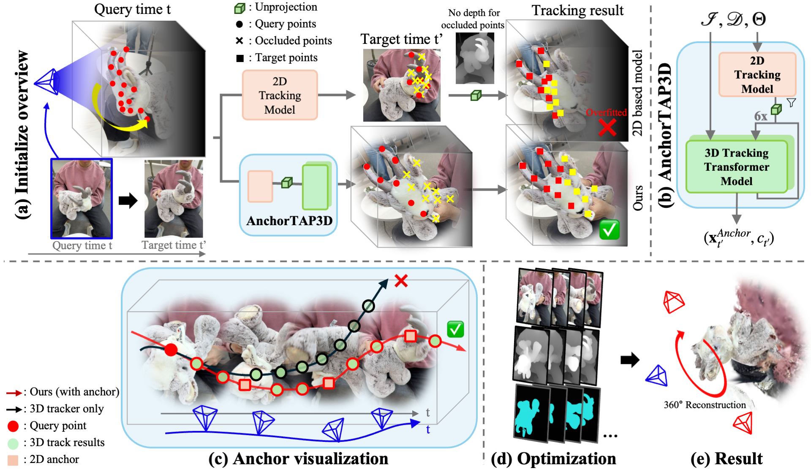
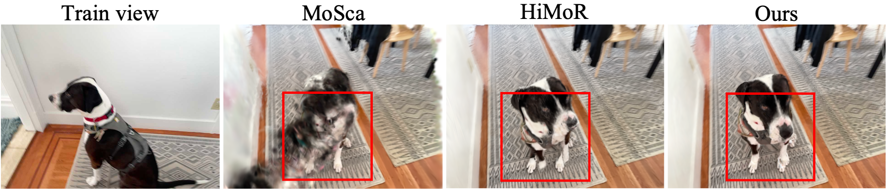
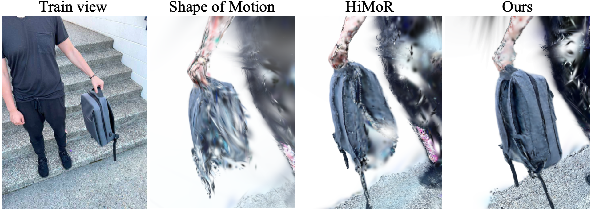
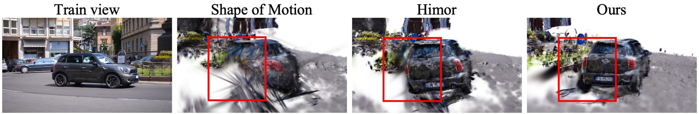

Scene: Goat
Scene: Jacket
TL;DR: We propose 4DGS360 for 360° reconstruction of dynamic objects from a single video, and introduce iPhone360, a new monocular 4D dataset for evaluation at extreme novel views.
We introduce 4DGS360, a diffusion-free framework for 360° dynamic object reconstruction from casual monocular video. Existing methods often fail to reconstruct consistent 360° geometry, as their heavy reliance on 2D-native priors causes initial points to overfit to visible surfaces in each training view. 4DGS360 addresses this challenge through an advanced 3D-native initialization that mitigates the geometric ambiguity of occluded regions. Our proposed 3D tracker, AnchorTAP3D, produces reinforced 3D point trajectories by leveraging confident 2D track points as anchors, suppressing drift and providing reliable initialization that preserves geometry in occluded regions. This initialization, combined with optimization, yields coherent 360° 4D reconstructions. We further present iPhone360, a new benchmark where test cameras are placed up to 135° apart from training views, enabling 360° evaluation that existing datasets cannot provide. Experiments show that 4DGS360 achieves state-of-the-art performance on the iPhone360, iPhone, and DAVIS datasets, both qualitatively and quantitatively.

We introduce a new iPhone360 dataset, a new real-world dataset that addresses the evaluation limitations of existing monocular dynamic datasets (HyperNeRF, iPhone). Unlike prior benchmarks, iPhone360 places test cameras up to 90°–135° apart from training views, enabling rigorous 360° novel-view evaluation.
Jacket
Jelly
Block2
Goat
Pull-up
Walk-around
Our model consistently outperforms the baseline models in extreme novel-view reconstruction across all scenes in the iPhone360 dataset. For the pull-up and block2 scenes, the baseline models achieve reasonable reconstruction in the early frames where the angular difference between the training and test cameras is relatively small. However, as the angle between the two cameras increases and the viewpoint shifts further, the baseline models exhibit a significant degradation in reconstruction quality compared to ours.

Haru-sit

Backpack

car-roundabout